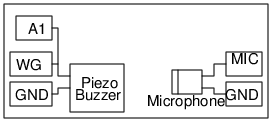

Schematic

- Every mechanical object has a mechanical resonance frequency, decided
by its dimensions and elasticity proprties. The resonance frequecy of
the Piezo disc supplied with ExpEYES is around 3500 Hz. It could vary
from unit to unit.
- Applying an electrical signal makes the Piezo disc to undergo
oscillations and make sound.
- The amplitude of oscillation is maximum when the driving frequency is equal to the resonance frequency.
Instructions
- Make the connections. Fix the mic facing the buzzer, 4 to5 cm apart.
- Press the START button.
- The amplitude of the microphone output is plotted as a function of frequency.